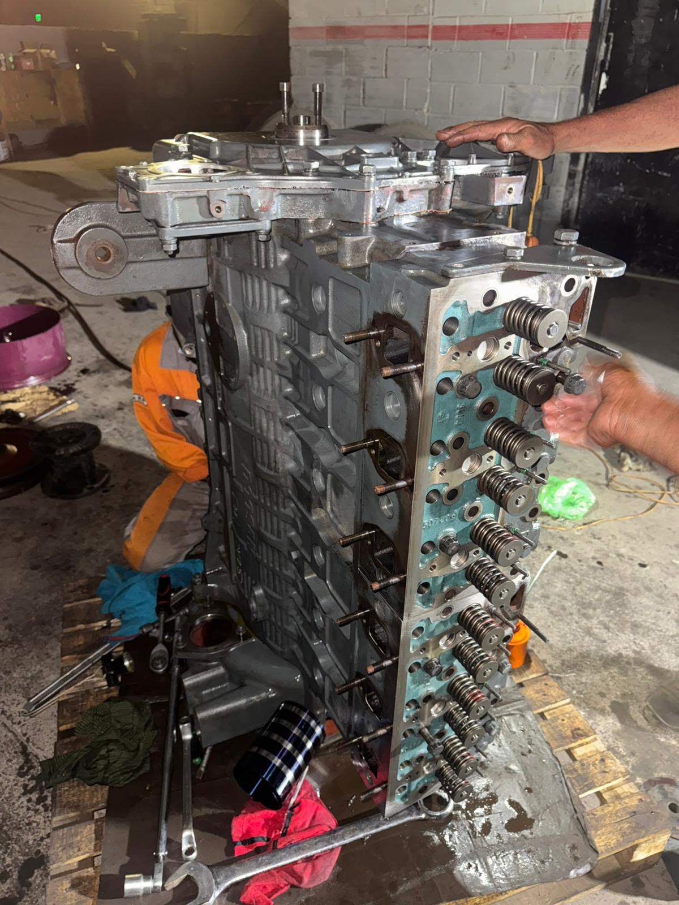
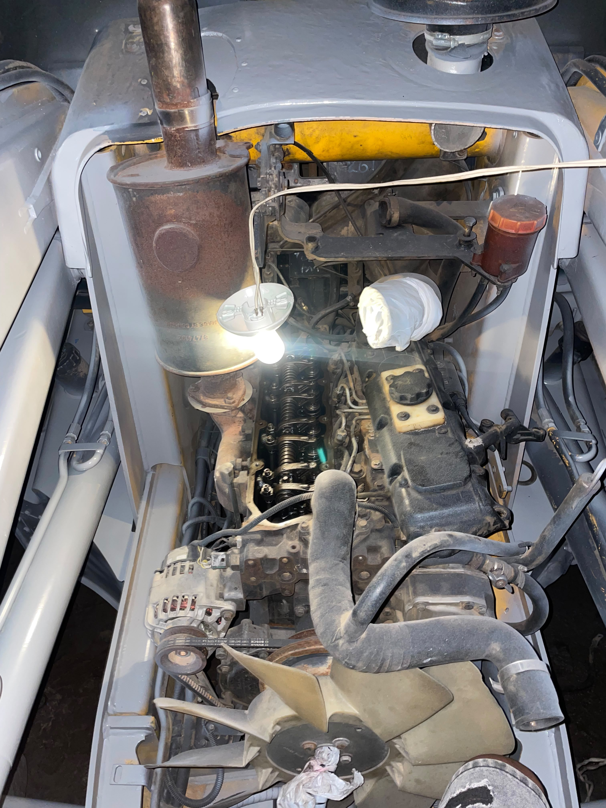
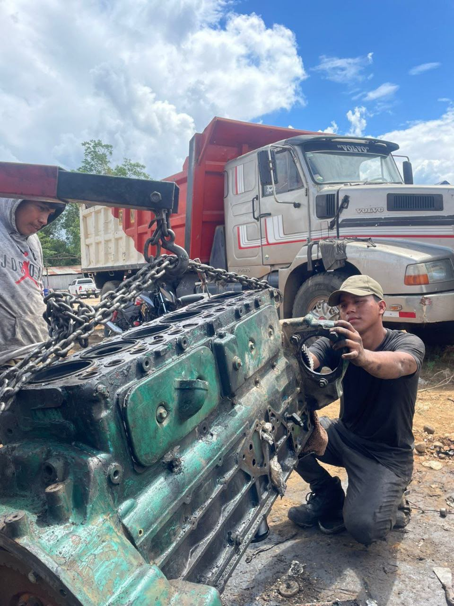
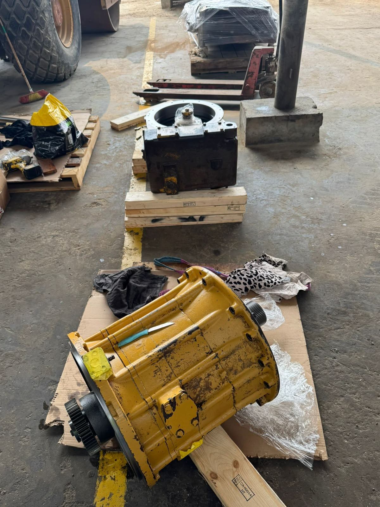

WILD DUCK
Diesel Repair - Mantenimiento y Reparación de Maquinaria Pesada
Diesel Repair - Mantenimiento y Reparación de Maquinaria Pesada
Revisiones programadas para evitar fallas y alargar la vida útil de tu maquinaria.
Diagnóstico y reparación de motores diesel para maquinaria pesada y equipos industriales.
Reparación y mantenimiento de bombas, válvulas y cilindros hidráulicos.
Excavadoras, cargadores, retroexcavadoras, tractores y más.
Algunos de nuestros trabajos en maquinaria pesada




¿Necesitas mantenimiento o reparación urgente?
📱 Escríbenos por WhatsApp: 906 294 436Tarapoto, San Martín, Perú
*Agrega tu dirección exacta aquí*
Lunes a Sábado: 8:00 AM - 6:00 PM
Domingo: Previa coordinación
WhatsApp: 906 294 436
Atención inmediata